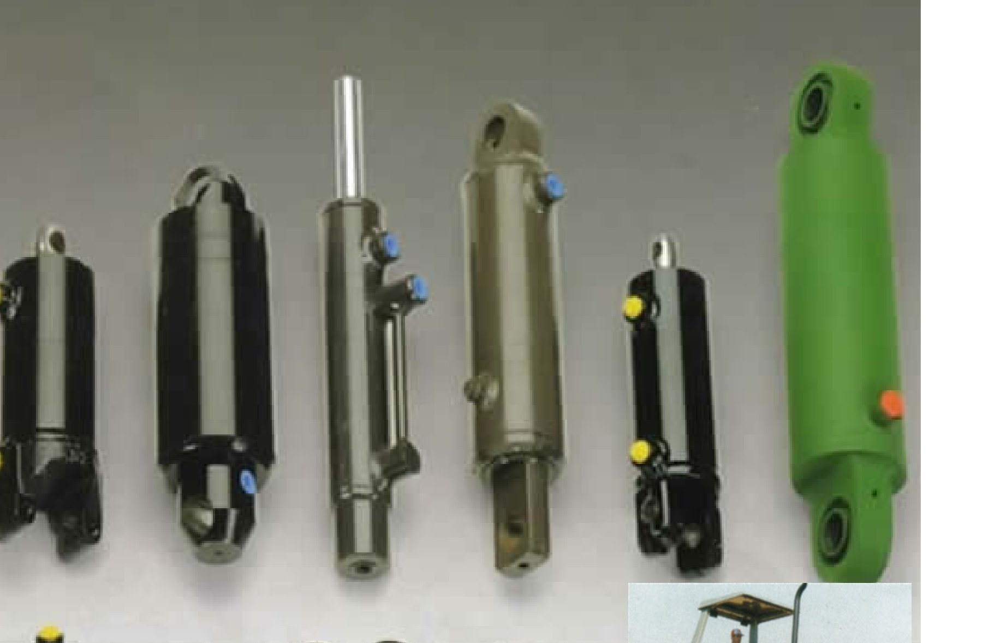
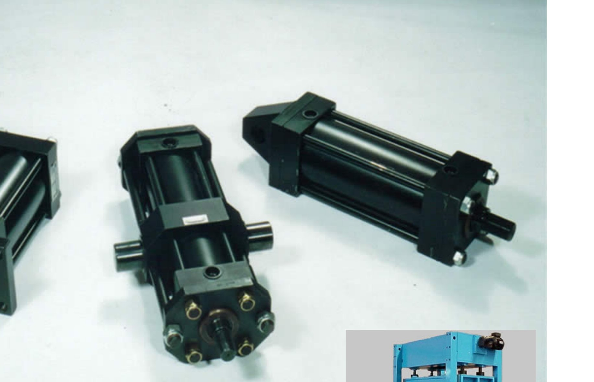
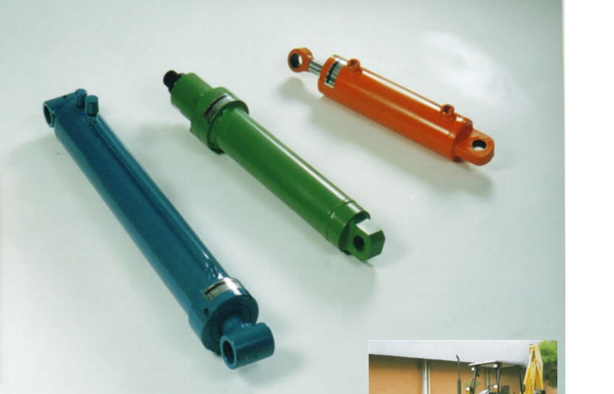
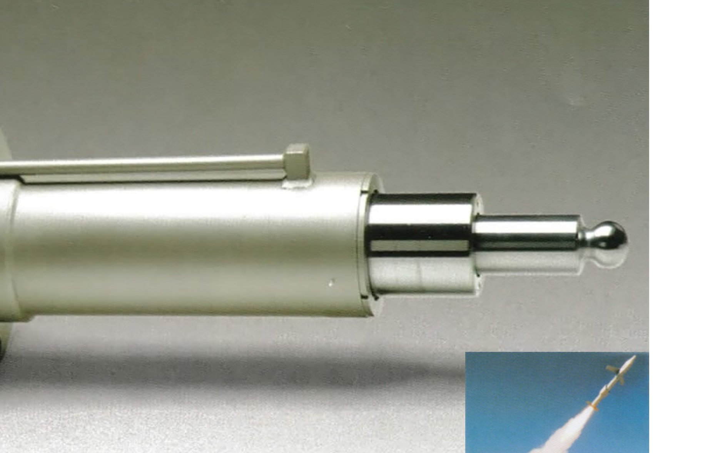

Linha
Agrícola
Tração, plantio, pulverização e colheita. Cilindros robustos para o trabalho contínuo no campo.
Fabricamos cilindros hidráulicos sob medida para os setores agrícola, industrial e rodoviário — construídos segundo normas universais NFPA e JIC, no nosso parque fabril em Cachoeirinha-RS.
A Neumaq Máquinas e Equipamentos Ltda. nasceu em uma garagem improvisada e, graças à dedicação no atendimento e ao rigor técnico, hoje opera em sede própria em Cachoeirinha-RS, com equipe de engenheiros e profissionais qualificados em todos os processos.
Sob a direção do Eng. Mecânico Roberto Sampert, atendemos clientes de todo o Brasil com cilindros hidráulicos, brunimento, projetos especiais e assistência técnica especializada.

Cilindros atirantados com cabeçotes quadrados, montagem por tirantes não soldados e amplo catálogo de configurações — para projeto novo ou reposição.

Tração, plantio, pulverização e colheita. Cilindros robustos para o trabalho contínuo no campo.
Cilindros de alta performance para prensas, máquinas operatrizes e automação fabril.

Soluções para implementos rodoviários, basculantes, retroescavadeiras e equipamentos pesados.

Engenharia sob medida — do desenho ao protótipo — para aplicações únicas com normas e dimensões customizadas.
Camisas com acabamento Ra 0,4 µM garantem vedação perfeita e deslizamento suave dos componentes móveis.
Construção segundo padrões internacionais — montagem por tirantes não soldados para manutenção rápida e econômica.
Projetos especiais com desenvolvimento próprio — do dimensionamento ao protótipo, ajustados à sua aplicação.
Empresa certificada DNV (ISO 9001) e produtos com selo INMETRO, garantindo conformidade e rastreabilidade.
Conte para a nossa engenharia o que você precisa — diâmetro, curso, tipo de montagem e aplicação. Retornamos com uma proposta técnica em até 1 dia útil.